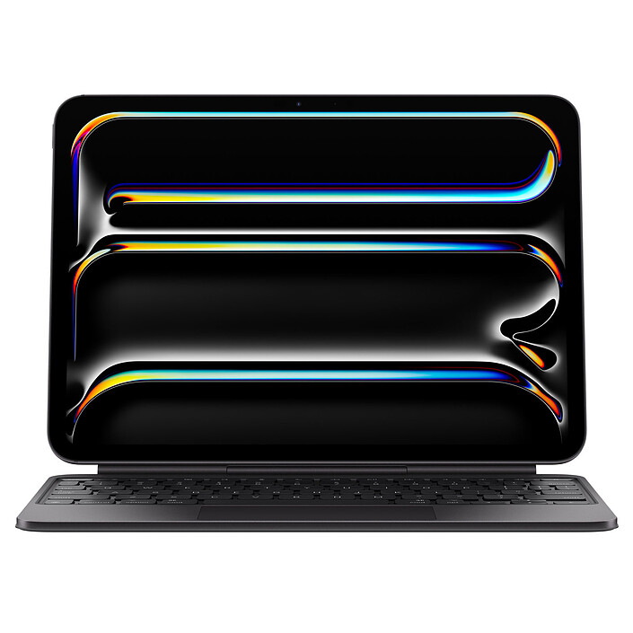

Hasta **21 horas**
de batería
2x
faster storage
11x
faster ML
3.7x
faster CPU
13x
faster graphics
Advanced **thermal architecture**
Rendimiento sostenido y eficiente.
Six-speaker sound system
con audio espacial
1080p
FaceTime HD camera
Up to **8TB** storage
Up to **64GB** memory


Magic Keyboard
Studio-quality mics

macOS Monterey